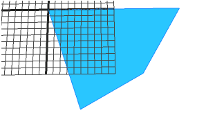
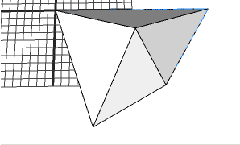

taper operation
taper(height)
height float How many units to extrude.
Tapers the shape (i.e. forms a pyramid over a polygon). The first polygon of the first mesh in the geometry asset is taken and tapered along the face normal through the the polygon's center of gravity. The scope orientation is set in the following way:
- x-axis direction is kept as much as possible (old x-axis is projected to the face plane)
- y-axis along the face normal (taper direction)
- z-axis normal to the two above
The scope's sizes are adjusted to tighly fit the extruded geometry.
If height is < 0, the scope.sy attribute will be < 0 and the taper will be down-wards.
Component tags

The operation automatically applies semantic component tags to the resulting face components:
| "taper.bottom" | Blue: original face. |
| "taper.side" | Yellow: side faces. |
For more information on working with component tags, refer to:
Related
Examples

The initial shape which is a lot (= geometry with 1 face).

Lot --> taper(10)
The tapered shape.